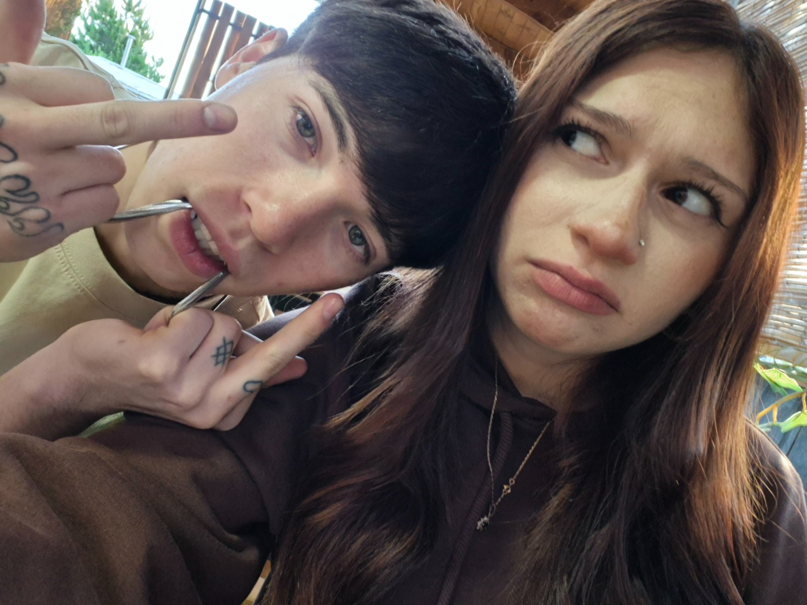

Nuestros recuerdos 💕



Desde el 14 de diciembre comenzó algo que jamás imaginé que sería tan especial. No son solo meses… son miradas, risas, abrazos, momentos simples que se volvieron recuerdos que quiero guardar para siempre. me haces una personita muy feliz y espero hacer lo mismo contigo mi wawa.
Cada día contigo es un regalo. Me encanta cómo me haces sentir, cómo haces que todo sea más bonito, más tierno, más nuestro.
Si alguien me preguntara qué cambió en mi vida, diría tu nombre sin dudarlo.
Antonia… Gracias por llegar a mi vida de la forma más inesperada y convertirte en lo más bonito que tengo. Gracias por tus abrazos que se sienten como hogar, por tus besos que me calman todo, por tu risa que podría escuchar mil veces. No sé qué nos espera en el futuro, pero sí sé que quiero seguir caminándolo contigo. Quiero más recuerdos, más fotos, más momentos simples que se vuelvan eternos. Te amo de una manera que no necesita exageraciones, porque lo que siento es real, tranquilo, profundo y sincero. Y aunque te diga mugrosa 😌 eres mi mugrosa favorita del universo. ❤️ — Yohan